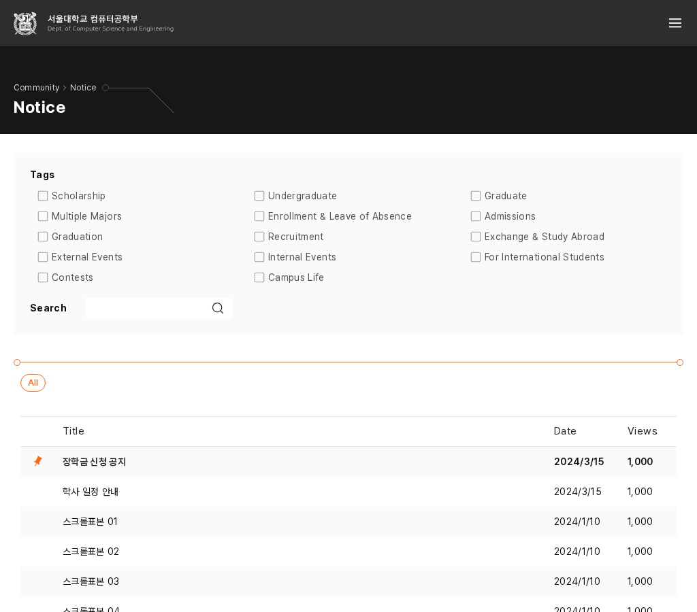

통합검색도 항목 길이에 맞는 열로
제안 · 앱 미적용먼저, 승인한 A안은 적용했어
DS-024: 메인 필터는 부족할 때 항목을 줄바꿈하고, 공지의 긴 영어 태그는 240px 이상의 열로 정렬한다. 한국어의 기존 배치는 유지했다.
실제 이미지 14장이 승인 견본과 일치했고 키보드 선택·필터 연결·편집 중 비활성을 확인했다. 실제 적용 전체 보기.
적용된 1024px 영어 공지 태그 보기

데스크톱 편집·관리 24개 상태도 실측했다. 기존 간격을 역할별로 정리하고 유지한다. 기존 규칙과 실제 폼 견본.
공유 사용처에서 남은 겹침
영어 통합검색은 최소 80px 열을 쓰는데, Research & Edu는 약 133px다. 일부 폭에서 다음 Admissions와 겹친다. 페이지 전체가 넘치지 않아도 항목을 구별하기 어렵다.
같은 열 정렬 원칙을 유지하면서 영어 통합검색은 최소 160px로 맞추는 제안이다. 기존에 쓰던 160px 값을 재사용하고, 공지의 240px까지 넓히지는 않는다. 한국어와 뉴스의 기존 열은 유지한다.
기존 배치와 비교
1280px는 6열 한 줄 → 3열 두 줄, 390px는 2열 세 줄 → 1열 여섯 줄이다. 영역 높이는 늘지만 이름·글자·순서·같은 폭의 열 정렬을 유지한다.
이번 판단 · L-Q4
영어 통합검색에도 같은 열 정렬 원칙을 확장하되, 내용에 맞는 160px 열로 진행할까?